Make music, simply.
Ikaros Studio is a free music studio for Linux, Windows and macOS, in the spirit of GarageBand. Pick a sound and play it, plug in a guitar or sing into a mic, and arrange it all on one friendly timeline.
Download Ikaros Studio View on GitHub
Free and open source · Linux, Windows and macOS
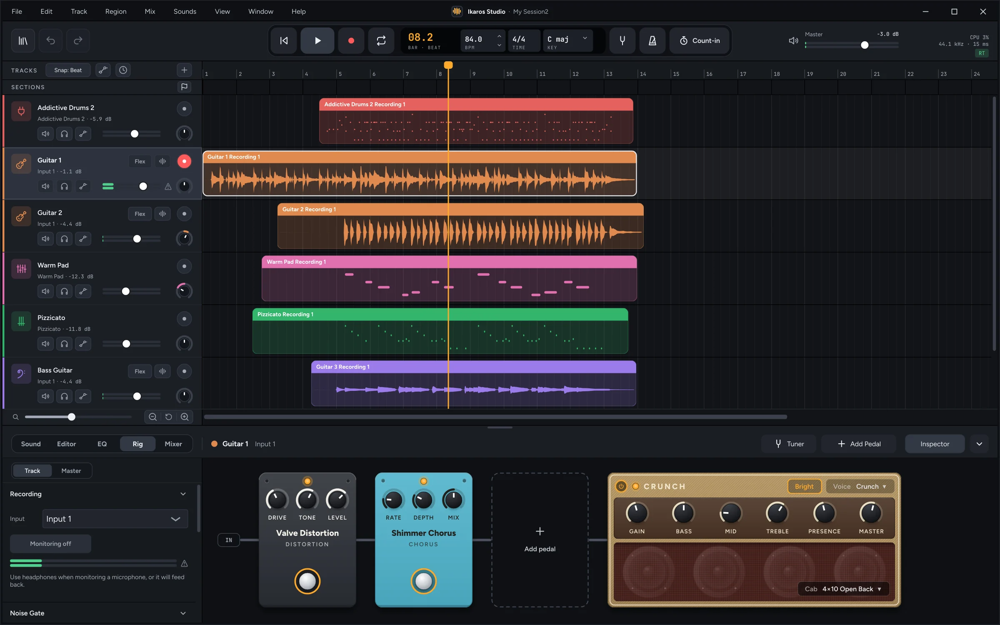
A whole studio, without the clutter
Everything you need to write, record and mix a song, with the advanced controls tucked away until you ask for them.
-
Play and record
Play instruments from a MIDI keyboard, your computer keyboard or the on-screen keys, or record a mic, a guitar or a stereo source, with a count-in if you like.
-
Loops that fit
Loops from the library follow your song's key and tempo, and the tempo and time signature can change partway through.
-
Guitar and bass rig
Twenty stompboxes and an amp with six voices and swappable cabinets, built from GxPlugins, Guitarix and KlonCentaur. There's a tuner, too.
-
A virtual drummer
Five styles of grooves played by real drummers. Choose how busy and how loud, how often it fills and how much it swings.
-
Vocals in tune
Tune keeps a voice in key as you sing, from a gentle nudge to a hard, robotic snap. Or edit each sung note by hand in Pitch mode.
-
Flex time
Drag the hits in a recording to new places while the audio in between stretches to fit, or quantize them to the grid like notes.
-
Song sections
Mark the intro, verse and chorus above your tracks, then drag a section to move its music on every track, or Alt-drag to copy it.
-
Mix and export
Add effects, send tracks to a shared reverb and delay, draw automation, then export the whole song or each track on its own.
-
Plug-ins, safely
VST3 and LV2 on Linux and Windows, VST3 and Audio Units on macOS. Each loads in its own helper process, so a plug-in that crashes is just skipped.
-
One file per song
A session is a single .iksession file holding every recording and loop it uses. Move it, back it up, or send it to a friend on any platform.
-
Never lose a take
Recordings go to disk as you play and a recovery copy keeps up as you work. If the app ever crashes, your unsaved work comes back.
-
Sound packs and Freesound
Ikaros Basics is built in, with more packs a click away. Add a free Freesound.org API key and you can search thousands of free loops, too.
A closer look
Click any screenshot to see it full size.
From blank page to playing in seconds
Start from a template with the tempo, time and key already set, then add exactly the track you need.
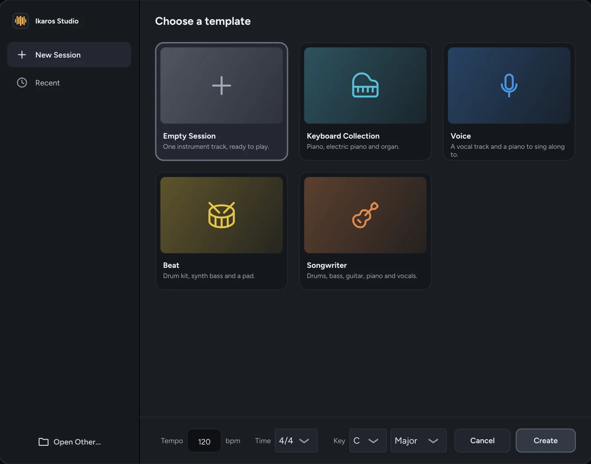
Five templates, from an empty session to a full songwriter band.
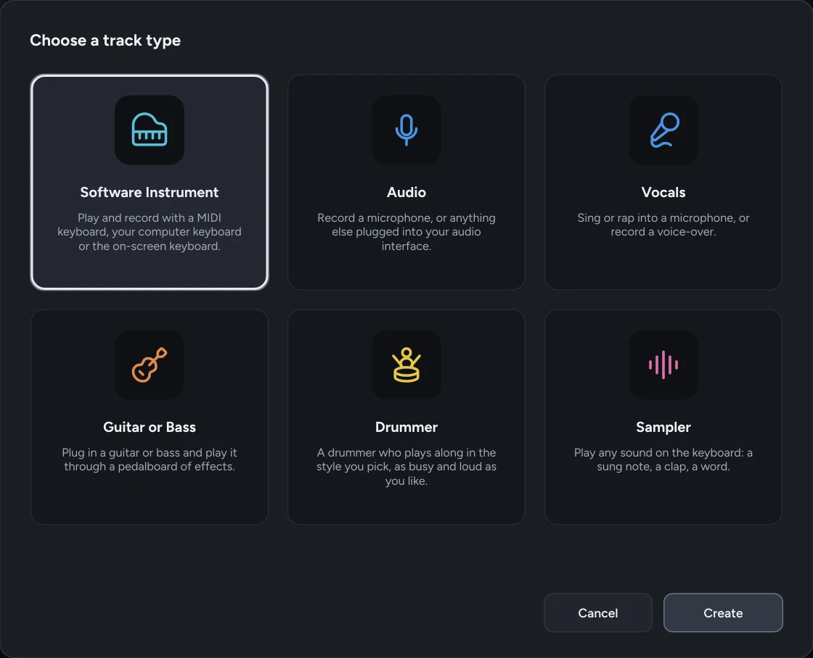
Six kinds of track: instrument, audio, vocals, guitar or bass, drummer and sampler.
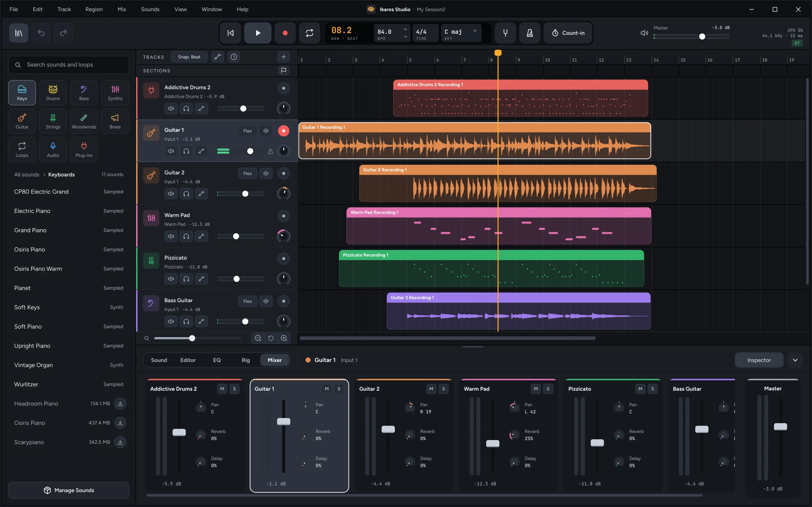
Find a sound, drop it in
Browse keys, drums, bass, synths, strings and more, search every pack at once, and drag a sound or loop onto the timeline.
The mixer sits right below, with pan and reverb and delay sends on every channel.
Thousands more loops, free
Sign up at Freesound.org and get a free API key, paste it into Ikaros Studio, and the loop browser searches Freesound's huge community library alongside your own packs, filtered by tempo. Only loops you're free to use (CC0 and CC BY) are listed, and each one you add is saved with credit to its author.
A pedalboard and an amp, built in
Plug in and play through a full signal chain: stompboxes in any order you drag them, then an amp and its speaker cabinet. There's a tuner in the display whenever you need it.
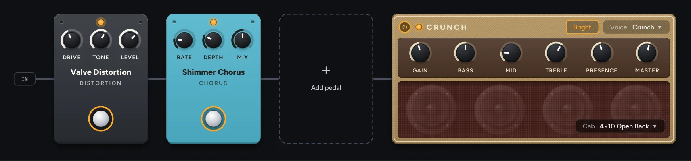
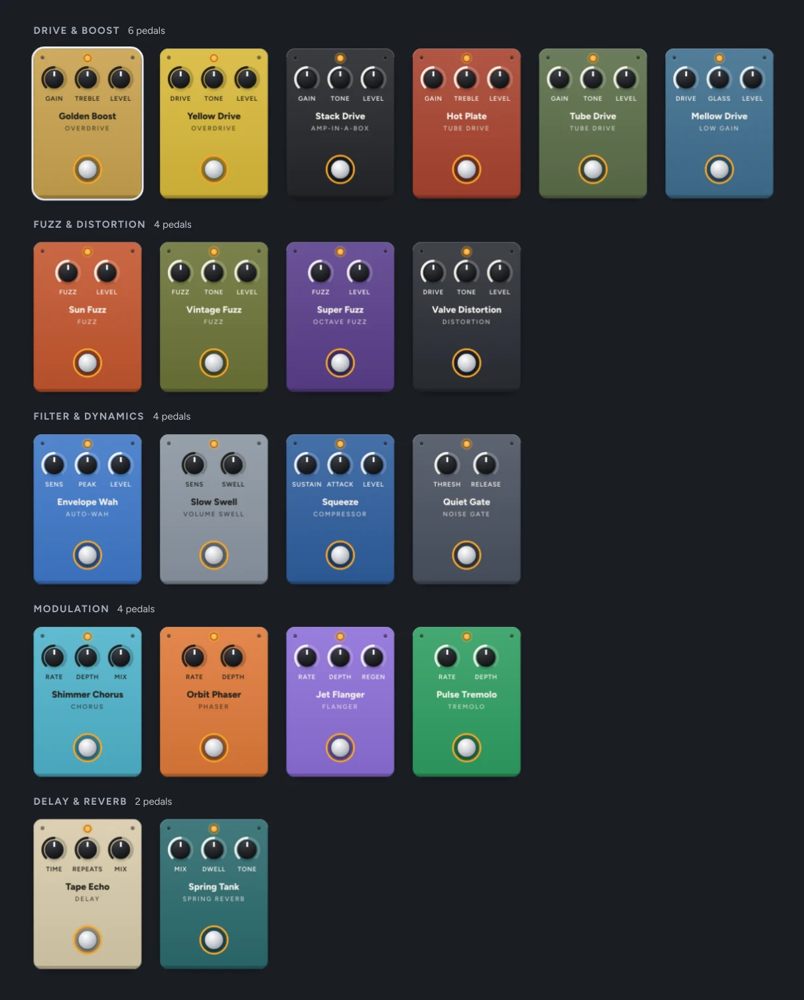
Twenty stompboxes to choose from
Most of their sound comes from GxPlugins, Guitarix and KlonCentaur, each one checked against the original.
- Drive & Boost: six pedals, from a clean boost to a tube drive
- Fuzz & Distortion: four, octave fuzz included
- Filter & Dynamics: auto-wah, swell, compressor and gate
- Modulation: chorus, phaser, flanger and tremolo
- Delay & Reverb: a tape echo and a spring tank
One amp, six voices
Each voice is built from a Guitarix amp model and tone stack, with its own tone controls and speaker cabinet. Swap the cabinet, or turn the amp off altogether.
-
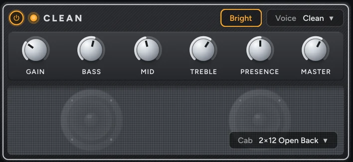
Clean · the most headroom, sparkling and clean
-
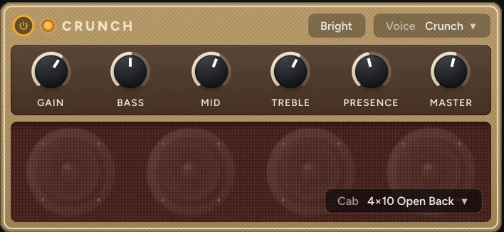
Crunch · tweed tubes that break up as you dig in
-
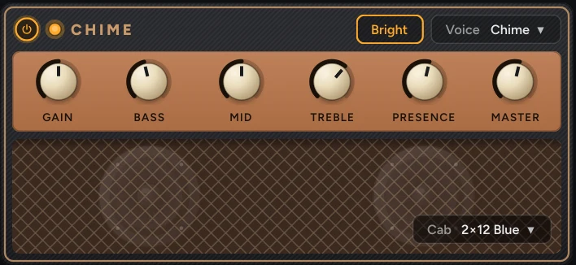
Chime · on the edge of breakup, so it jangles
-
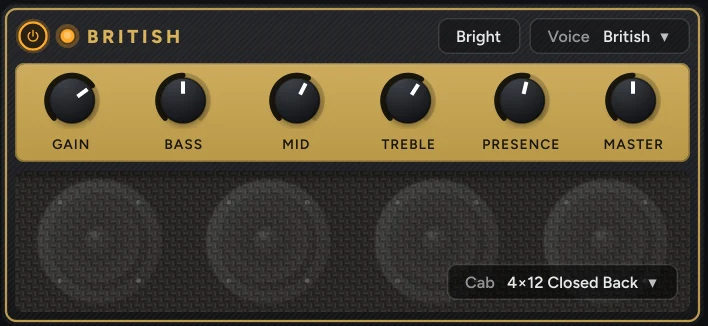
British · hot and compressed, a classic rock crunch
-
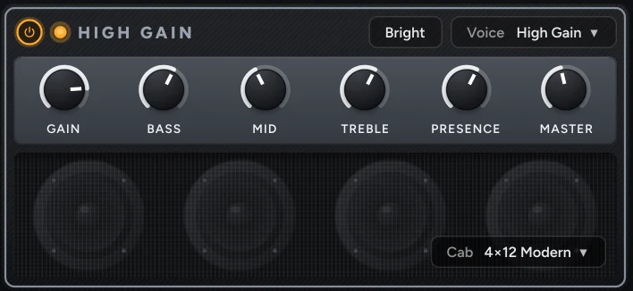
High Gain · fully saturated, even when you pick softly
-
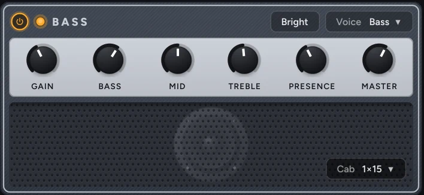
Bass · round and mostly clean, hairier turned up
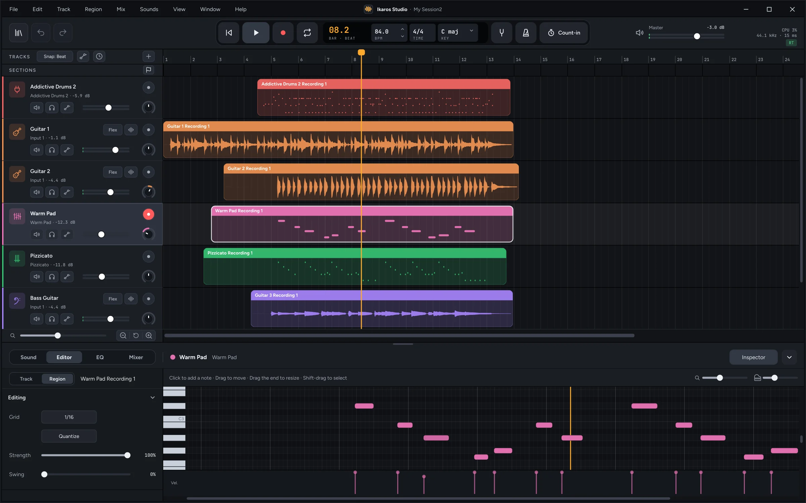
Shape every note
Click to add a note, drag to move it, drag its end to resize it, and set how hard it's played in the velocity lane below.
- Quantize with your own strength and swing
- Trim, fade, reverse and transpose audio
- Draw automation for any track
A drummer who plays along
Pick Rock, Pop, Funk & Soul, Hip-Hop or Songwriter, then drag the puck between simple and complex, soft and loud. It plays grooves recorded by real drummers for the Groove MIDI Dataset, adds a fill before each section, and turns into an ordinary MIDI region whenever you'd rather edit the notes yourself.
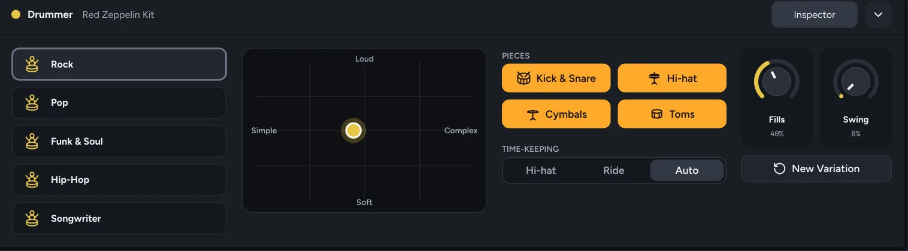
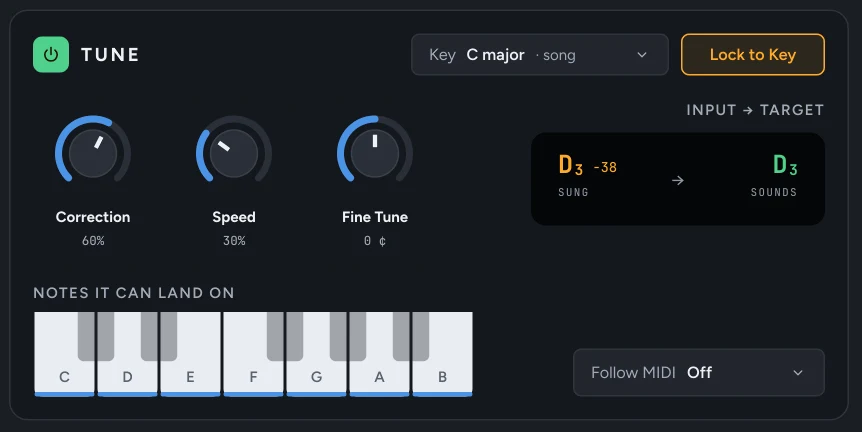
Stay in key as you sing
Tune corrects a voice in real time, locked to the song's key, from a gentle, natural nudge to a hard, robotic snap.
See each note you sang next to the note it sounds, choose which notes it can land on, or let it follow the notes of a MIDI track instead.
Every sung note, on its own row
Turn on Pitch for a recording and the editor shows each note you sang. Drag one to a new pitch, double-click it to center it, snap the whole take to the key or smooth out its vibrato. Reset puts it back exactly the way it was sung.
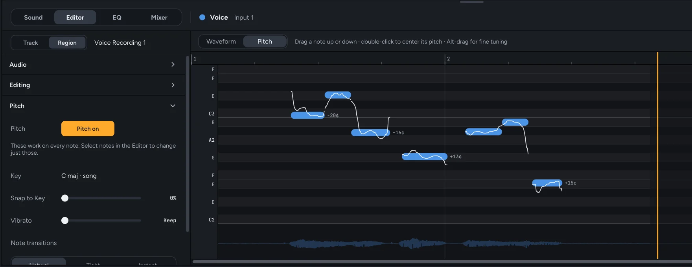
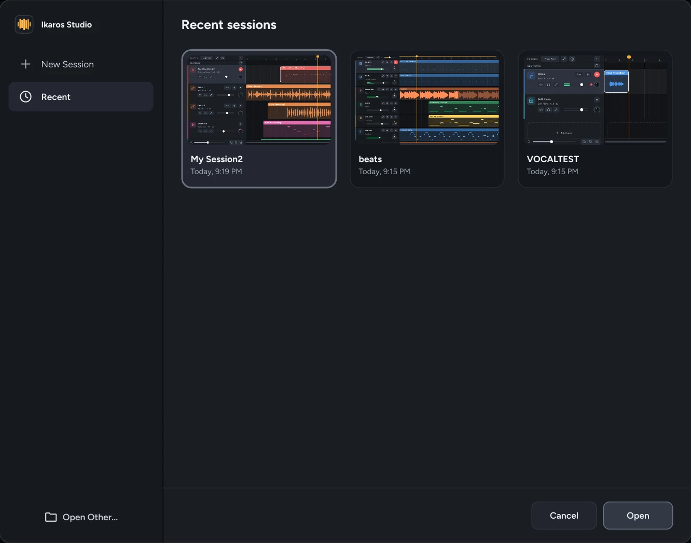
One file, everything inside
Like a GarageBand project, an .iksession file holds your session and every recording, loop and audio file it uses, so it opens the same on Linux, Windows or macOS.
Your saved file only changes when you save, and recordings line up with the music on their own.
Get Ikaros Studio
Free for Linux, Windows and macOS. Each release is built and published on GitHub.
Heads up: Ikaros Studio is in alpha. Expect changes and the occasional rough edge, and please report anything that breaks.
Built on great work
Ikaros Studio is free software under the GNU GPL v3, and it stands on these projects. Thank you.
- Tracktion Engine
- JUCE
- sfizz
- Rubber Band
- Guitarix
- GxPlugins
- KlonCentaur
- fat1
- zita-at1
- pitch-detection
- Groove MIDI Dataset
- miniz
- LAME
- Ardour MIDI maps
The full list, with every license, is in CREDITS.
Join in
Project repository: github.com/thecalamityjoe87/ikaros-studio
Found a bug or have an idea? Open it on the Issues page.